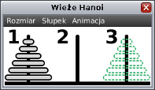

W osobnym oknie pojawiły się krążki oraz trzy paliki.
Pierwotnie początkowym palikiem jest pierwszy palik, a docelowym
palik trzeci. Jednak można to zmienić posługując się menu „słupek”.
Pierwotnie wieża składa się z sześciu krążków, jednak tę liczbę można także zmienić
posługując się menu „rozmiar”. Twoja funkcja „hanoi” powinna operować na krążkach
wyświetlonych w tym oknie. W tym celu należy skorzystać z funkcji specjalnej „przenies”,
która jest omówiona poniżej.
Funkcja „przenies”, jak sama nazwa wskazuje, służy do przenoszenia krążków.
Jako parametr funkcja przyjmuje numery dwóch palików,
palika początkowego („
skad”) oraz palika docelowego („
dokad”).
Funkcja przenosi krążek z palika początkowego na palik docelowy.
Podane parametry powinny być liczbami 1, 2 lub 3. Jeśli choć jeden z parametrów
będzie mniejszy niż 1 lub większy niż 3, wówczas program przerwie swoje działanie
i zostanie zgłoszony błąd. Zatrzymanie programu i pojawienie się błędu wystąpi
również w poniższych trzech przypadkach. Błąd wystąpi jeśli:
- parametry „skad” i dokad” będą równe;
- na paliku początkowym nie będzie żadnego krążka;
- na paliku „skad” będzie większy krążek niż na paliku „dokad”.